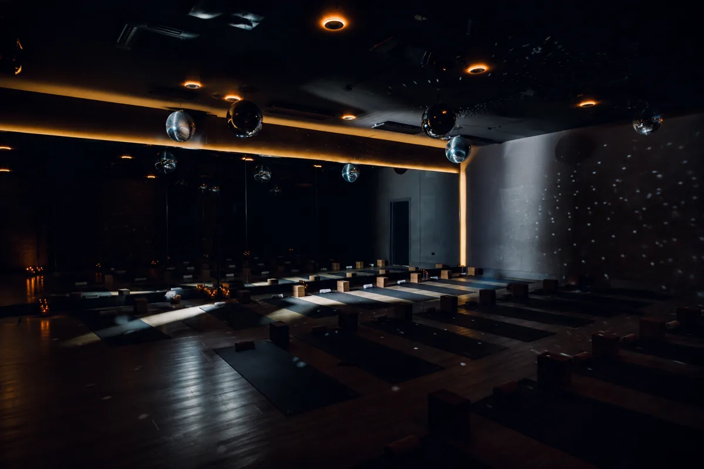

Mel
Explore Mel’s approach to intentional movement, breath, and welcoming students into their practice.
Meet MelYoga · Sculpt · Mat Pilates · Glen Ellyn
Find your rhythm. Meet your people.
Explore a downtown Glen Ellyn studio where music, low lighting, and infrared warmth shape the class experience.

The studio behind the practice
Founded by MaryBeth Searls in 2022, DRIPYOGA brings a personal, community-minded approach to heated classes. Its story centers on making yoga feel approachable, with thoughtful playlists and a space where people can settle into their practice.
The instructors are part of what makes each visit personal. Get to know a few people featured on REC, then check the live schedule for the teacher and class you’d like to try.
Great instructors deserve to be recognized.
Explore Mel’s approach to intentional movement, breath, and welcoming students into their practice.
Meet MelGet to know Sam through her REC story and recommendations highlighting her encouragement, music, and energy.
Meet SamTeaching since 2012, Sue celebrates the friendships and strength students carry beyond the mat.
Meet SueThese are selected instructors with DRIPYOGA connections in their REC features. Check the studio’s current schedule for the full roster and teaching availability.
Formats vary in pace and heat. The studio describes infrared-heated sessions ranging from 80 to 105°F; check the individual listing before booking.
From the REC community
Excerpt from a recommendation on REC
“one of the best yoga teachers in the area! …”
Meagan’s recommendation describes Mel’s teaching; it does not name a studio.
Open REC, search for Mel, and view her recommendations to read the full text.
Get REC for iPhone526 Duane Street
Glen Ellyn, IL 60137
Parking options include Duane Street and the nearby Glen Ellyn Parking Garage. Check the studio’s guidance and posted parking restrictions before your visit.
For your first visit, confirm the heat, class level, and what to bring directly with DRIPYOGA. The studio also offers private group classes; contact its team for details.
A little appreciation goes a long way. If an instructor has made a difference in your practice, show them some love. Leave them a REC.
Explore yoga in Glen Ellyn and Lisle · Meet more studios
Independent community feature by REC. Studio story, class information, contact details, and photos checked November 25, 2026 against DRIPYOGA’s official website, studio story, and contact page. Reservations and payments are managed directly by the studio.